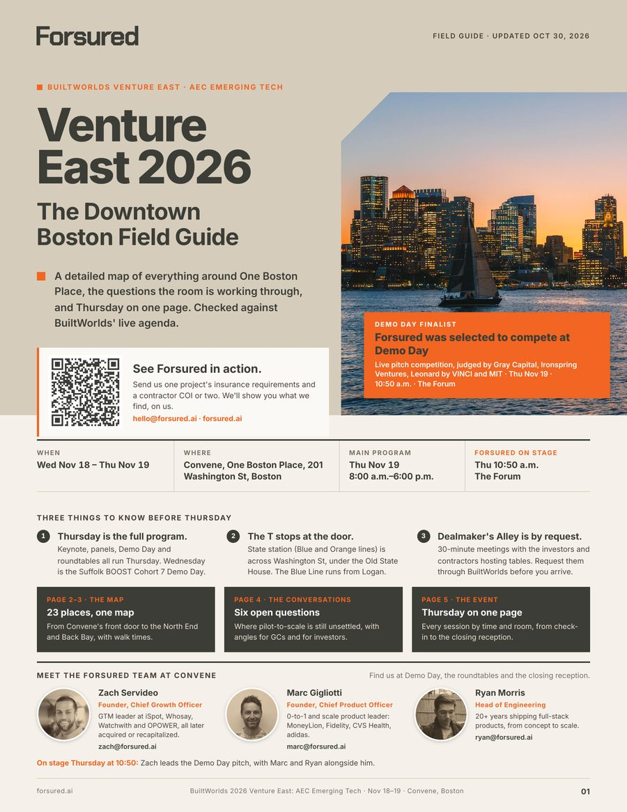
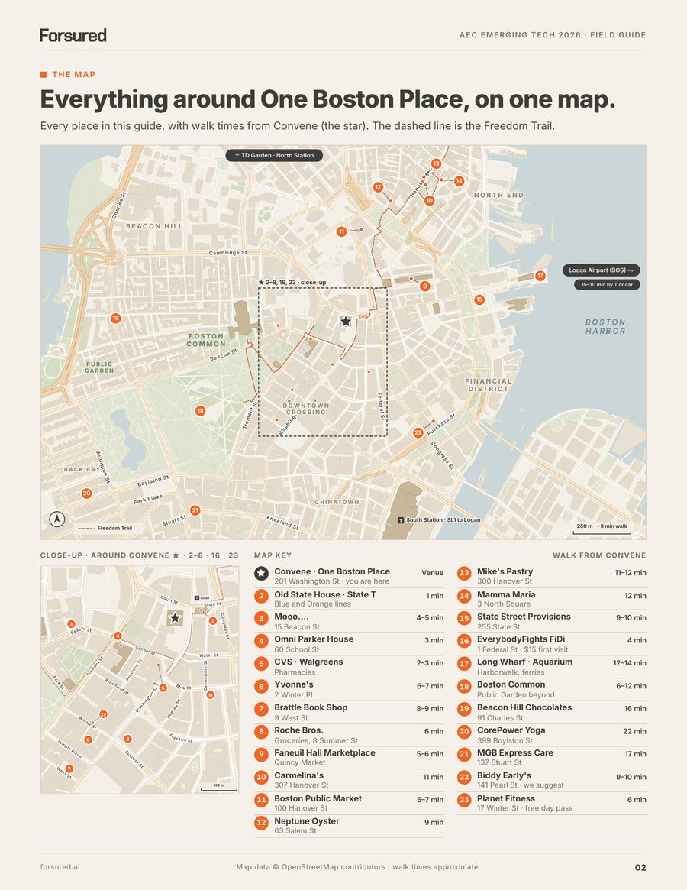
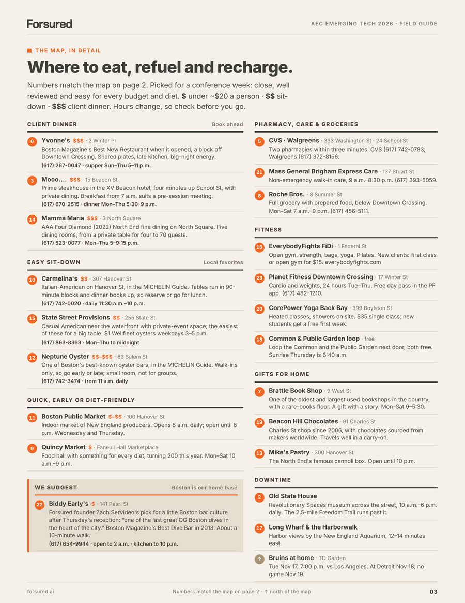
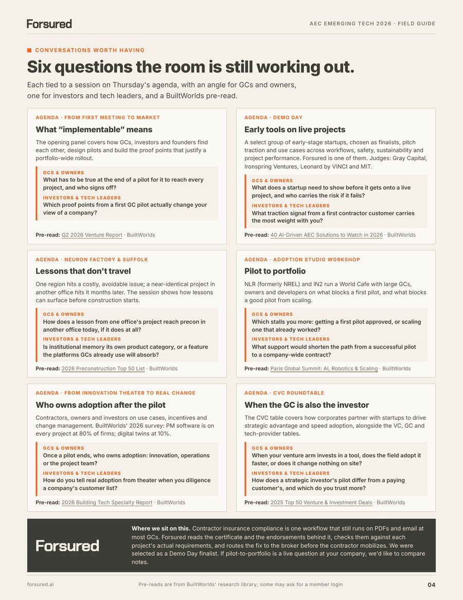
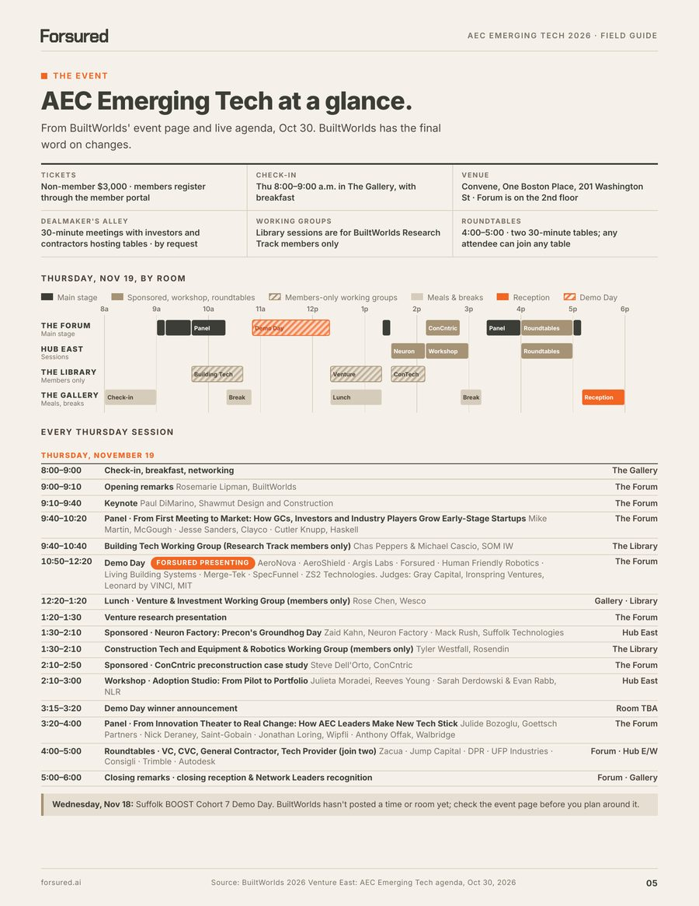
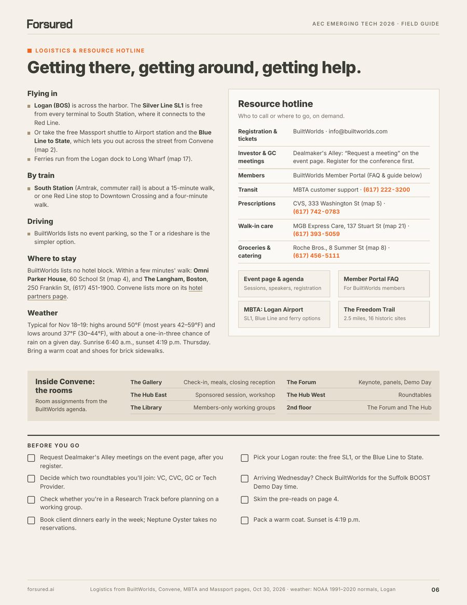
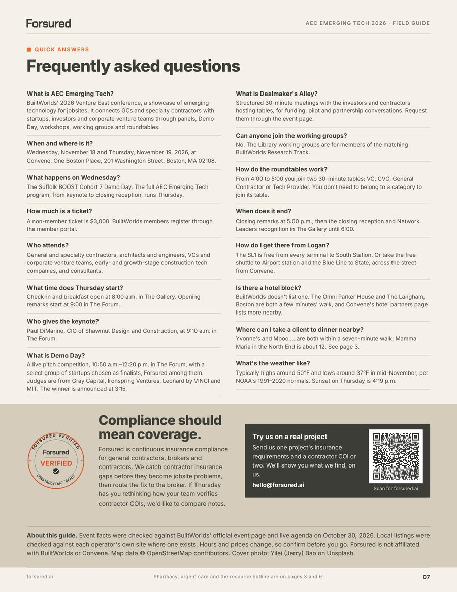

A detailed map of everything around One Boston Place, six questions the room is still working out, and Thursday on one page. Prepared by Forsured, a Demo Day finalist, for everyone heading to AEC Emerging Tech.







We were selected as a Demo Day finalist, and we pitch in The Forum. While you're in Boston, get a free COI risk check, no strings attached. Send one project's requirements and a contractor COI or two to hello@forsured.ai, and we'll walk you through what we find.